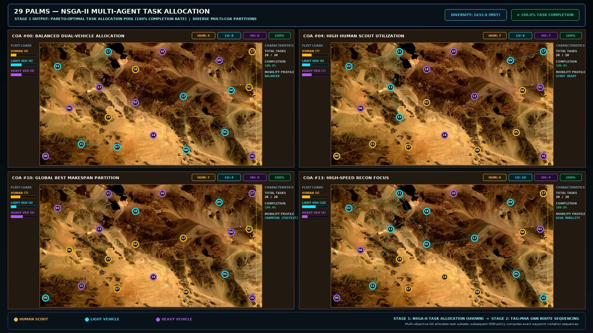
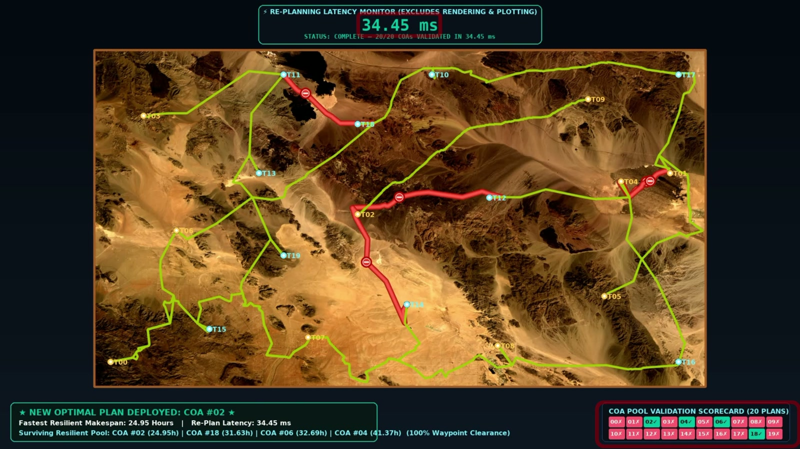

Research overview
Abstract
Course-of-action generation combines multi-objective task allocation with graph-based route sequencing. The demonstration constructs a pool of alternative plans for a human scout, a light vehicle, and a heavy vehicle at 29 Palms. When flooding blocks transit corridors, the system checks the precomputed pool and selects a surviving plan, separating expensive initial generation from rapid disruption response.
Mission setting and objectives
The program asks how to produce many distinct and robust courses of action under information overload from terrain, weather, obstacles, and adversary information. The stated research objective is planning within an hour for missions spanning hundreds of miles.
The video demonstrates 20 tasks with three heterogeneous agents: a human scout, a light vehicle, and a heavy vehicle. Candidate allocations differ in the use of each agent and in their operational emphasis. The introduction depicts completion rate and diversity as optimization objectives. [1, 0:00–1:30; 2, slides 2–3]
Stage 1: multi-objective task allocation
An NSGA-II genetic algorithm assigns task subsets using information from environment abstraction. The displayed pool includes balanced dual-vehicle allocations, greater use of the human scout, and allocations emphasizing the light vehicle. The first-stage display labels its illustrated allocations as achieving 100% completion.
Diversity matters because a set of different allocations can retain useful alternatives when some routes become unavailable. Allocation chooses which agent handles each task; it is followed by a separate sequencing stage. [1, 0:45–1:15]
Stage 2: graph-based task sequencing
A TAG-MHA graph neural network policy orders the tasks assigned to each agent. The video expands TAG-MHA as Time-Aware Graph Multi-Head Attention. The sequencing display describes minimizing travel latency and avoiding deadline breaches over HOPHY terrain waypoints.
The output is a pool of 20 COAs, subsequently ranked by mission time. The video illustrates plans with different balances of mechanized workload, reconnaissance, sector coverage, and reliance on human traversal. These alternatives expose operational choices beyond a single fastest route. [1, 1:15–2:45]
Weather disruption and pool validation
The disruption scenario introduces flash flooding and road washouts. The display reports five critical transit corridors washed out and 1.3% of the network severed. The system checks which precomputed COAs avoid blocked paths and ranks the survivors.
Four surviving plans appear in the validation display: COA #02 (24.95 h), #18 (31.63 h), #06 (32.69 h), and #04 (41.37 h). COA #02 becomes the selected resilient plan. The subsequent animation shows its execution while avoiding the blocked corridors. [1, 2:45–4:00]
Computation time versus mission time
| Quantity | Reported value | Interpretation |
|---|---|---|
| Initial pool generation | Approximately 100 min | Computation for 20 COAs |
| Pool validation after disruption | 34.45 ms | Replanning latency; excludes rendering and plotting |
| Selected resilient makespan | 24.95 h | Mission duration for COA #02, not computation time |
The demonstrated initial generation time is longer than the program’s within-an-hour objective. The millisecond result concerns checking the existing plan pool after disruption; it does not measure generating all plans from scratch. [1, 1:30–1:45; 3:15–3:30; 2, slide 2]
Research figures


Module demonstration
Full supplied presentation · 4:10. Chapter links open the video at the indicated point. The written sections above provide a companion description of the methods and demonstrations.
Sources and research context
- Coa_planning_expo.mp4. Supplied GRAPPLE module presentation. Figures reproduced from the video; chapter times are approximate.
- ONR introduction slides. Program, research challenge, four-module workflow, and team; slides 1–4.
Results on this page are attributed to the supplied presentations. The materials do not include full benchmark protocols or bibliographic records for every component.

{kind=link}
{kind=link}